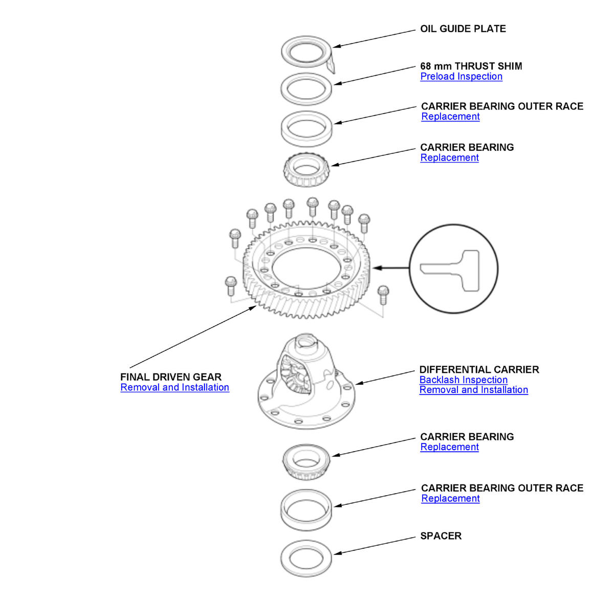

LEMON Manuals
: Even more car manuals for everyone: 1960-2025
Home
>>
Honda
>>
2016
>>
Civic LX, 4D Sedan, Automatic CVT Trans
>>
Repair and Diagnosis
>>
Transmission
>>
Automatic Trans
>>
Continuously Variable Transaxle (CVT) - Testing & Troubleshooting (Adjustment - Inspection)
>>
Component Location Index
>>
CVT Differential Component Location Index (K20C2 (CVT))
CVT Differential Component Location Index (K20C2 (CVT))

Courtesy of HONDA, U.S.A., INC.